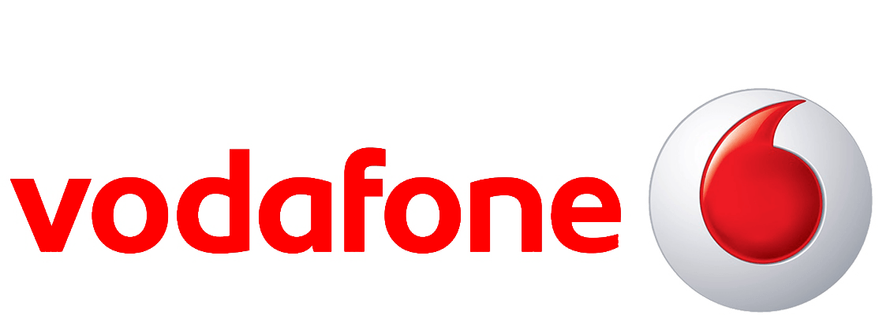

YOUSSEFSELIM
Everything boils down to the experience. I believe in perfection of creation through the journey taken. Enthusiastic towards clean user interfaces and simple user experience. Experienced with Agile and product development life cycle.
Click anywhere on each card to reveal more information.close
Front-End Engineer @ Cypherpathmore_vert
August 2014 - Present
Washington, USAclose
- Designed and implemented single page applications to assist in the user workflow and save resources.
- Optimized API and views with postgres lookups to handle results over 1000s queries.
- Optimized assets rendering to increase performance and enhance navigation.
- Created, Updated and Deleted Django forms, views and models.
- Revamped user interface with more flat user-friendly design.
- Reworked front-end pieces to complement multiple features.

Multiple Roles @ AIESECmore_vert
2011, 2013 and 2014
From Egypt to USAclose
- assignment_lateSystems Developer, National Support Body (New York, USA)2014
- Created guidelines for proper information management on Podio (CRM Solution).
- Maintained support-ticketing system (using open-source osTicket).
- Developed new UI with proper brand material.
- assignmentWebmaster, Information Systems, AIESEC International Congress (Sharm ElSheikh, Egypt)2013
- Developed a website for livestream with traffic that resulted in over 30,000 unique visits.
- Maintained the congress website, done in synergy with the content and events managers.
- Supported over 4 events in sessions logistical planning, dry runs and implementation.
- Managed SEO for the congress website that resulted in quicker indexing.
- assignment_indVice President of Communication & IM, AIESEC Cairo University (Cairo, Egypt)2011
- Implemented information management strategy that resulted in alumni database creation and internal knowledge management system.
- Managed the first alumni networking event and the development and launch of the first brand of the local chapter.
- Developed, tracked and implemented the internal and external communication strategy.
- Awarded best communication function at national level - AIESEC Egypt.
- Deveolped, tracked and implemented the PR and branding strategy.
- Team management and development of 3 team leaders and 15 members.

Intern, Premier Support @ Microsoftmore_vert
August 2012 - September 2012
Cairo, Egyptclose
- Assisted the Technical Account Managers reactive support operations.
- Documented and reported the flow and results of 7 customers' meetings.
- Shadowed technical operations on-site with a Premier Field Engineer.

Technical Intern @ Vodafonemore_vert
July 2009 - August 2009
Cairo, Egyptclose
- Worked with Support Team in Citrix and Microsoft SharePoint Management.
- Implemented an upgrade project for internal Citrix Web Interface.
- Recommended upgrading Citrix Desktop Server to XenApp.
German University in Cairo
BSc, Computer Science and Engineering
A+ in Bachelor's project
2008 - 2013

- done_allDjango
Familiar with MVC (MVT in this case) workflow. Created and maintained multiple Django apps.
- doneHTML5 & CSS3
Experienced with essential web tools as well as few preprocessors (e.g. Jade and Sass).
- gradeJavascript
Experienced with vanilla javascript structures, creating prototypes, closures and polling.
- gradeJava
Learned Java through university education and implemented various projects.
- trending_flatjQuery
Go-to framework for daily web development and ajax needs.
- trending_flatPhonegap
Created bachelor's project mobile payment app with Phonegap to enable multiple OS support.
- trending_upPostgresSQL
Familiar with postgres shell and basic CRUD queries.
- trending_upPython
Experienced with Python and usage in Django and Rest framework API.
...